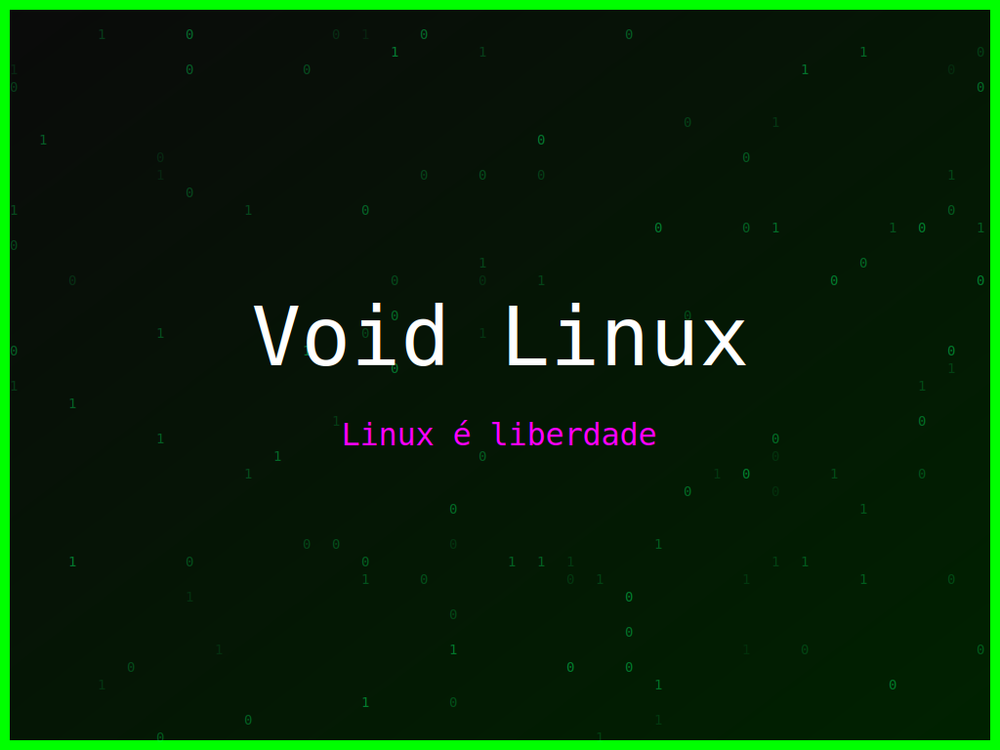

<section class="post-content">


    <div class="details-container">
         
        <ul class="details-list">
            <li><strong>Autor:</strong> piolinux</li>
            <li><strong>Descrição:</strong> Design inspirado na liberdade do terminal, com o tema Void Linux.</li>
            <li><strong>Distro:</strong> Void Linux</li>
            <li><strong>Frases:</strong> Terminal é vida, Linux é liberdade, Hack the Planet</li>
            <li><strong>Tags:</strong> matrix, colorido</li>
        </ul>
        <a href="../galeria.html">Voltar para a galeria</a> ||
        <a href="../wallpaper18.svg" download="wallpaper-void-linux-liberdade-no-terminal.svg">Baixar Wallpaper</a>
    </div>

</section>
